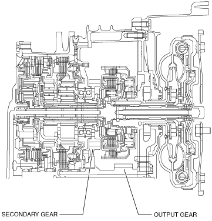

SECONDARY GEAR [CW6A-EL]
id0517l1352000
Purpose/Function
• The secondary gear transmits the drive force from the primary gear to the output gear.
Construction
• The secondary gear is engaged with the output gear and rotates as a single unit.

am2zzn00002342